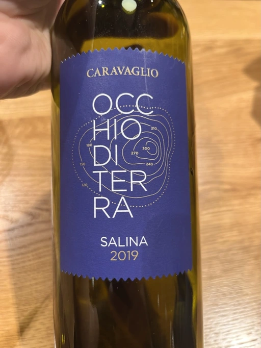

- Type
- White Still, Dry
- Producer
- Caravaglio
- Vintage
- 2019
- Location
- Italy, IGP Salina
- Grapes
- Malvasia di Candia Aromatica
- Alcohol
- 13
- Sugar
- NA
- Price
- 1000 UAH
- Cellar
- N/A
Ratings
2022-09-12 - 7.50
Tasted blind and didn’t guess. Turned out to be gently macerated Malvasia from Lipari (Aeolian Islands)! What a rare and pleasant surprise. Slightly restrained nose with notes of candied stone fruits, mushrooms, earth, and clay. It lacks acidity, but it’s still well-balanced. The taste evolution is interesting. At first, it seems to be short, but then the second wave comes with flavours of candied fruits, and then the third wave with a saline finish.